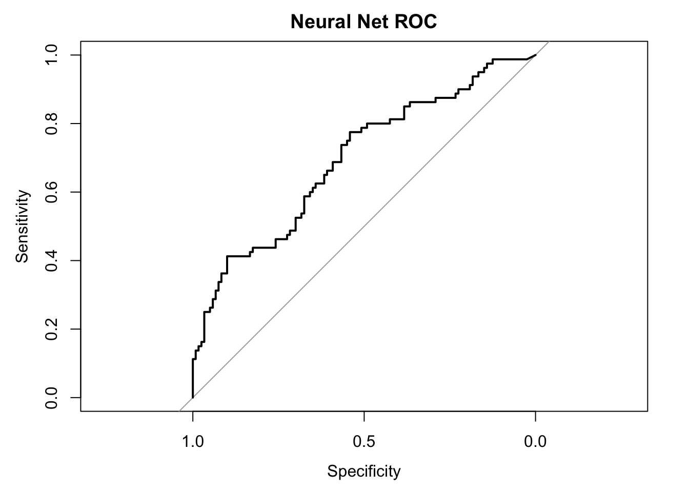
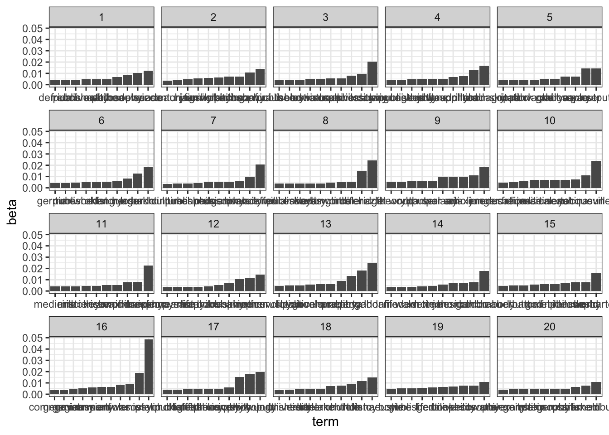
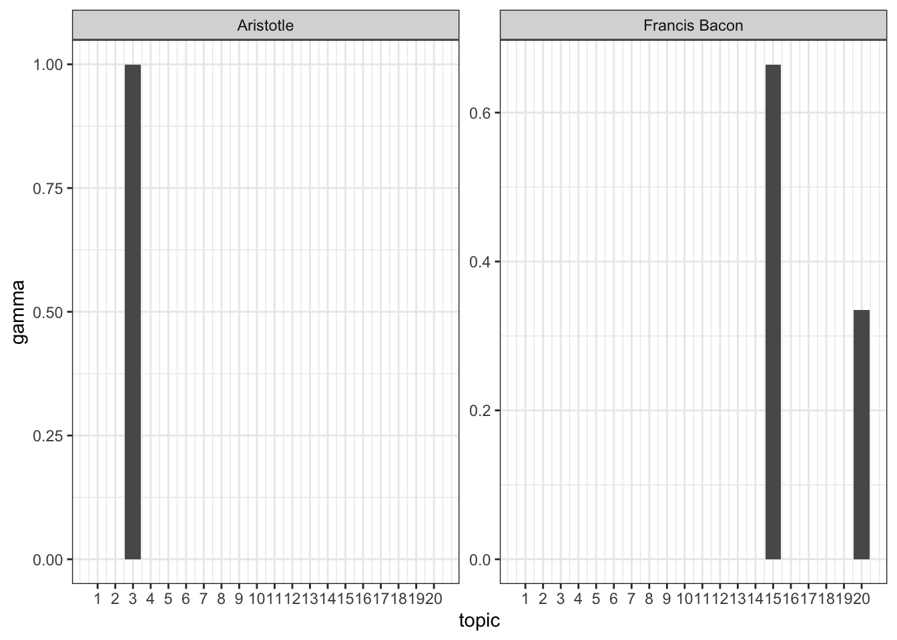

9 Machine Learning with caret
A few weeks back, we learned how to perform linear regression, with single and multiple predictors. Linear regression will be useful in a wide range of situations, particularly for descriptive and scientific purposes when you want outputs that you can interpret. That said, there are no guarantees that it will be the most accurate method for predicting your outcome of interest. In fact, often times, when you want to optimize on prediction accuracy, it is worth trying a range of other methods to compare which provides the most accurate predictions.
The best package for doing this in R is caret (short for Classification And REgression Training). It provides: tools for splitting your data into training and test sets, a number of different models, from random forests to logistic regression, and tools for selecting the best model out of a set of alternatives. In this brief tutorial, we will go through an example from start to finish. We’ll load data, identify an outcome of interest, split the data into training and test sets, fit a series of models to the training data, and evaluate their performance on the test set. Machine learning is an entire subfield of computer science and could be the basis of a course on its own, as such we will only graze the surface of what you can do and what you should consider when predicting social phenomena.
9.1 The data
The data for this week’s lab come from Twitter, specifically from a recent Kaggle competition (https://www.kaggle.com/c/twitter-sentiment-analysis2), which asked participants to predict the sentiment of a series of tweets using the text content of the tweets. Given our discussion of text analysis in class, let’s see how accurately we can predict sentiment using the tools at our disposal.
9.2 Training vs. testing
In machine learning, people generally separate their analysis into two steps. First, they train their model on the data. This is what we did when we fit a multiple regression model to the GSS data. Second, they test the model on data the model hasn’t seen yet in order to evaluate its performance. Why does it matter if the model has seen the test data before? Often times, this can lead to overfitting - where your model is trained too specifically to the data at hand and cannot generalize beyond it. This can means that when your model does see new data it hasn’t seen before, it will do a poor job predicting.
We will follow this general routine, and train our models on a subset of the data called the training data and then test how well it performs by seeing how accurately it classifies new data. Generally, you assign about a fifth of your total sample to be part of the testing data and the remaining eighty percent are used to train the model.
First, let’s install caret and load it into R. We’ll need to load in tidytext and tidyverse too.
install.packages("caret")library(caret)## Loading required package: lattice##
## Attaching package: 'caret'## The following object is masked from 'package:purrr':
##
## liftlibrary(tidyverse)Great, now let’s load in the data. I put it on Canvas for easy access.
data <- read.csv("Data/train.csv", stringsAsFactors = F, encoding = "UTF-8")We’ll focus specifically on the SentimentText column, which includes the content of tweets. This is our first time working with text data and it is never as easy as you would hope. We have to do a few things to prepare the data; for example, convert it to utf-8 and remove in extra white space. For the first, we’ll use iconv, which converts between different standards. For the second, we’ll use trimws, which, you guessed it, trims white space.
data$SentimentText <- iconv(data$SentimentText, from = "latin1", to = "utf-8")
data$SentimentText <- trimws(data$SentimentText)Okay now let’s have a look at the data.
View(data)It is pretty simple - there are three columns, an id column, the human-evaluated sentiment of the text, and the actual text itself.
The data are huge, so we can play around with a smaller subset of 10000 tweets.
set.seed(1234)
data <- data[sample(1:nrow(data), 1000),]9.3 Creating features
To predict the sentiment, we will have to use the text of the tweets. Specifically, we need to extract characterizations or features for each of the tweets which can then be used as predictor variables in the model. We could for example use the different words in the tweets as predictors (how many times does the word happy appear in a given tweet? how about sad?). The problem with this approach is that most words only appear in a few tweets at most. Having such sparse predictors can lead to unstable models which fail to converge. That means we would have to be very selective in our choices and there is no guarantee that we would choose the right words.
So what about adding some overall features of the tweet, rather than just the words themselves? There is a cool package called textfeatures in R, which automatically extracts a bunch of useful text information for you (even word embeddings!)
install.packages("textfeatures")
install.packages("text2vec")library(textfeatures)
library(text2vec)Let’s extract the features along with 20 word embedding dimensions
textlevel_features <- textfeatures(data$SentimentText,
word_dims = 20,
normalize = T,
verbose = FALSE)
data_w_features <- cbind(data, textlevel_features)
# drop the coluns which we won't use in the model
data_w_features <- subset(data_w_features, select = -c(ItemID, SentimentText))
# set the outcome variable to factor (since it is categorical, sentiment or not)
data_w_features$Sentiment = as.factor(data_w_features$Sentiment)
## drop columns with little to no variance
min_var <- function(x, min = 1) {
is_num <- vapply(x, is.numeric, logical(1))
non_num <- names(x)[!is_num]
yminvar <- names(x[is_num])[vapply(x[is_num], function(.x) stats::var(.x,
na.rm = TRUE) >= min, logical(1))]
x[c(non_num, yminvar)]
}
data_w_features <- min_var(data_w_features)Now let’s split this smaller data into training and test sets.
training_ids <- sample(rownames(data_w_features), 800)
training_data <- data_w_features[rownames(data_w_features) %in% training_ids,]
test_data <- data_w_features[!rownames(data_w_features) %in% training_ids,]Cool! Now let’s begin building our models.
9.4 Constructing a model
Constructing models in caret involves two steps. First, we have to decide how training should occur. For example, should it use cross-validation (where the data is divided into k equal parts, k rounds of training and testing occur, where data is trained on k-1 portions of the data and tested on the last, held-out portion)? There are many different options, but for now we will just use cross-validation with 5 folds.
fitControl <- trainControl(method = "cv",
number = 5)Now we can fit models.
m.randomForest <- train(Sentiment ~ .,
data = training_data,
method = "rf",
trControl = fitControl,
na.action = na.omit,
trace = FALSE)## Naive Bayes
##
## 800 samples
## 37 predictor
## 2 classes: '0', '1'
##
## No pre-processing
## Resampling: Cross-Validated (5 fold)
## Summary of sample sizes: 641, 640, 640, 640, 639
## Resampling results across tuning parameters:
##
## usekernel Accuracy Kappa
## FALSE 0.5853086 0.2041723
## TRUE 0.5988604 0.2304654
##
## Tuning parameter 'fL' was held constant at a value of 0
## Tuning
## parameter 'adjust' was held constant at a value of 1
## Accuracy was used to select the optimal model using the largest value.
## The final values used for the model were fL = 0, usekernel = TRUE and adjust
## = 1.m.decisionTree <- train(Sentiment ~ .,
data = training_data,
method = "C5.0",
trControl = fitControl,
na.action = na.omit,
trace = FALSE)
m.decisionTree## C5.0
##
## 800 samples
## 37 predictor
## 2 classes: '0', '1'
##
## No pre-processing
## Resampling: Cross-Validated (5 fold)
## Summary of sample sizes: 640, 640, 640, 639, 641
## Resampling results across tuning parameters:
##
## model winnow trials Accuracy Kappa
## rules FALSE 1 0.6174395 0.2195846
## rules FALSE 10 0.6311663 0.2466009
## rules FALSE 20 0.6387677 0.2580611
## rules TRUE 1 0.6050568 0.1856155
## rules TRUE 10 0.6036349 0.1844294
## rules TRUE 20 0.6173536 0.2143403
## tree FALSE 1 0.6049550 0.1971405
## tree FALSE 10 0.6436352 0.2681289
## tree FALSE 20 0.6674091 0.3171329
## tree TRUE 1 0.5850023 0.1572419
## tree TRUE 10 0.6037680 0.1875013
## tree TRUE 20 0.6149632 0.2136201
##
## Accuracy was used to select the optimal model using the largest value.
## The final values used for the model were trials = 20, model = tree and winnow
## = FALSE.m.NeuralNet <- train(Sentiment ~ .,
data = training_data,
method = "nnet",
trControl = fitControl,
na.action = na.omit,
trace = FALSE)
m.NeuralNet## Neural Network
##
## 800 samples
## 37 predictor
## 2 classes: '0', '1'
##
## No pre-processing
## Resampling: Cross-Validated (5 fold)
## Summary of sample sizes: 640, 640, 640, 641, 639
## Resampling results across tuning parameters:
##
## size decay Accuracy Kappa
## 1 0e+00 0.6251111 0.2324807
## 1 1e-04 0.6413309 0.2799198
## 1 1e-01 0.6536978 0.3034218
## 3 0e+00 0.6225957 0.2290596
## 3 1e-04 0.6325730 0.2541539
## 3 1e-01 0.6062516 0.2038744
## 5 0e+00 0.6025251 0.1941279
## 5 1e-04 0.5938376 0.1701331
## 5 1e-01 0.6149866 0.2246250
##
## Accuracy was used to select the optimal model using the largest value.
## The final values used for the model were size = 1 and decay = 0.1.Which method makes the most accurate predictions? caret provides some handy functions for evaluating this.
# Make predictions using the test data set
rf.pred <- predict(m.randomForest,test_data)
nb.pred <- predict(m.NaiveBayes,test_data)
dt.pred <- predict(m.decisionTree,test_data)
nn.pred <- predict(m.NeuralNet,test_data)
#Look at the confusion matrix
confusionMatrix(rf.pred, test_data$Sentiment) ## Confusion Matrix and Statistics
##
## Reference
## Prediction 0 1
## 0 44 28
## 1 36 92
##
## Accuracy : 0.68
## 95% CI : (0.6105, 0.744)
## No Information Rate : 0.6
## P-Value [Acc > NIR] : 0.01187
##
## Kappa : 0.322
##
## Mcnemar's Test P-Value : 0.38157
##
## Sensitivity : 0.5500
## Specificity : 0.7667
## Pos Pred Value : 0.6111
## Neg Pred Value : 0.7188
## Prevalence : 0.4000
## Detection Rate : 0.2200
## Detection Prevalence : 0.3600
## Balanced Accuracy : 0.6583
##
## 'Positive' Class : 0
## confusionMatrix(nb.pred, test_data$Sentiment) ## Confusion Matrix and Statistics
##
## Reference
## Prediction 0 1
## 0 69 68
## 1 11 52
##
## Accuracy : 0.605
## 95% CI : (0.5336, 0.6732)
## No Information Rate : 0.6
## P-Value [Acc > NIR] : 0.4732
##
## Kappa : 0.2644
##
## Mcnemar's Test P-Value : 2.967e-10
##
## Sensitivity : 0.8625
## Specificity : 0.4333
## Pos Pred Value : 0.5036
## Neg Pred Value : 0.8254
## Prevalence : 0.4000
## Detection Rate : 0.3450
## Detection Prevalence : 0.6850
## Balanced Accuracy : 0.6479
##
## 'Positive' Class : 0
## confusionMatrix(dt.pred, test_data$Sentiment) ## Confusion Matrix and Statistics
##
## Reference
## Prediction 0 1
## 0 43 33
## 1 37 87
##
## Accuracy : 0.65
## 95% CI : (0.5795, 0.7159)
## No Information Rate : 0.6
## P-Value [Acc > NIR] : 0.0844
##
## Kappa : 0.2647
##
## Mcnemar's Test P-Value : 0.7199
##
## Sensitivity : 0.5375
## Specificity : 0.7250
## Pos Pred Value : 0.5658
## Neg Pred Value : 0.7016
## Prevalence : 0.4000
## Detection Rate : 0.2150
## Detection Prevalence : 0.3800
## Balanced Accuracy : 0.6312
##
## 'Positive' Class : 0
## confusionMatrix(nn.pred, test_data$Sentiment) ## Confusion Matrix and Statistics
##
## Reference
## Prediction 0 1
## 0 52 47
## 1 28 73
##
## Accuracy : 0.625
## 95% CI : (0.5539, 0.6923)
## No Information Rate : 0.6
## P-Value [Acc > NIR] : 0.25896
##
## Kappa : 0.2485
##
## Mcnemar's Test P-Value : 0.03767
##
## Sensitivity : 0.6500
## Specificity : 0.6083
## Pos Pred Value : 0.5253
## Neg Pred Value : 0.7228
## Prevalence : 0.4000
## Detection Rate : 0.2600
## Detection Prevalence : 0.4950
## Balanced Accuracy : 0.6292
##
## 'Positive' Class : 0
## We can also plot a ROC curve, in which the True Positive rate (sensitivity) is plotted against the True Negative rate (specificity). This is good for evaluating whether your model is both correctly predicting which are and are not positive sentiment (not just one or the other).
library(pROC)
#Draw the ROC curve
nn.probs <- predict(m.NeuralNet,test_data,type="prob")
nn.ROC <- roc(predictor=nn.probs$`1`,
response=as.numeric(test_data$Sentiment)-1,
levels=rev(levels(test_data$Sentiment)))
nn.ROC$auc## Area under the curve: 0.6939#Area under the curve: 0.6936
plot(nn.ROC,main="Neural Net ROC")
<!--chapter:end:09-MachineLearning.Rmd-->
---
output: html_document
---
# A text project, from start to topic model
In this tutorial, we focus on a new analysis strategy for text - topic modeling. We download all of the pages on Wikipedia for famous philosophers, from Aristotle to Bruno Latour. Each page discusses their lives and works and we topic model the text in order to identify shared themes across them.
To do this, we first need to load in a bunch of packages. If you are missing one of these packages - if you get the error message "Error in library(tm) : there is no package called ‘tm’", for example - then you should use install.packages() to install it.
In particular, there are three packages we have never seen before: stringi, which is useful for manipulating strings (we will use it to convert non-latin script to latin script), tm, which is a suite of functions for text mining in R, and texclean, which has useful functions for cleaning text.
```r
library(rvest)
library(tidytext)
library(dplyr)
library(tidyr)
library(stringi)
library(tm)
library(textclean)Most of the real scraping work I left out of the tutorial for the sake of time. But I followed, more or less, what we learned in the week on scraping. I found a page a series of pages which list philosophers alphabetically. I visited those pages and saw that they contained links to every Wikipedia page for a well-known philosopher. I used Inspect to copy the Xpath for a couple of these links and found that they followed a similar pattern - each was nested in the HTML structure underneath the pathway //*[@id=“mw-content-text”]/div/ul/li/a. I extracted the set of nodes which followed that path and grabbed the href (HTML lingo for a url) from each. The result was a list of Wikipedia short links for philosophers. I pasted the main wikipedia URL to precede short links. I also grabbed the titles of the nodes, which was the names of the philosophers. I used lapply to apply this function to each of the four pages, saved the results for each in a data.frame, and used do.call(“rbind”) to put all of them into a single data.frame.
grab_urls <- function(x){
# id the url locations on the page (identified using Inspect and XPath)
philosophers_urls <- html_nodes(x, xpath = '//*[@id="mw-content-text"]/div/ul/li/a')
# extract the URL specifically
href_links <- philosophers_urls %>% html_attr('href')
# paste the url ending to wikipedia English main url
urls <- paste0("https://en.wikipedia.org/", href_links)
# extract each philosopher's name
philosopher_names <- philosophers_urls %>% html_attr('title')
# save the result in a data.frame
df <- data.frame(Philosopher = philosopher_names, URL = urls, stringsAsFactors = F)
# output the data.frame
return(df)
}
# download html for each of the main philosopher pages from wikipedia
philosophers_A_C <- read_html("https://en.wikipedia.org/wiki/List_of_philosophers_(A–C)")
philosophers_D_H <- read_html("https://en.wikipedia.org/wiki/List_of_philosophers_(D–H)")
philosophers_I_Q <- read_html("https://en.wikipedia.org/wiki/List_of_philosophers_(I–Q)")
philosophers_R_Z <- read_html("https://en.wikipedia.org/wiki/List_of_philosophers_(R–Z)")
# apply the above code to each of the pages
all_dfs <- lapply(list(philosophers_A_C, philosophers_D_H, philosophers_I_Q, philosophers_R_Z), grab_urls)
# put it all together
all_philosophers <- do.call("rbind", all_dfs)
# saveRDS(all_philosophers, "all_philosophers_2021.RDS")Let’s take a look. The data.frame has two columns - Philosopher and URL. We can use this information to now go to each of the philosopher’s pages and grab the content of their Wikipedia page.
View(all_philosophers)So now I write a new function which grabs the text from each page. It takes as its argument a URL. The HTML of this URL is read into R using rvest’s read_html. Then the body of the page - identified by //*[@id=“mw-content-text”]/div/p - is read into R and its text is extracted. This text is returned.
grab_text <- function(x){
philosopher_html <- read_html(x)
philosopher_text <- philosopher_html %>%
html_nodes(xpath = '//*[@id="mw-content-text"]/div/p') %>%
html_text()
return(philosopher_text)
}I apply it, again using lapply, to every URL in the all_philosophers data.frame. The result is the text of every philosopher’s page on Wikipedia. The only problem is it takes a while to run, especially if your computer isn’t fast.
philosophers_page_text <- lapply(all_philosophers$URL, function(x) try(grab_text(x)))
# saveRDS(philosophers_page_text, "philosophers_page_text_2021.RDS")I actually saved the results into an RDS file and put them on Canvas, so that you wouldn’t have to run this full loop (though you can if you are curious.) Download philosophers_page_text.RDS, drag it into your R directory, and load it in using readRDS, like so.
philosophers_page_text <- readRDS("Data/philosophers_page_text_2021.RDS")
philosophers_page_text <- philosophers_page_text[sample(1:length(philosophers_page_text), 200)]So the texts are quite messy and we need to clean them before we can analyze them (though with topic modeling, this isn’t strictly necessary since it will often lump all of the junk into its own topic.) We build a function to do that. It uses repeated gsubs to remove characters that we don’t want from the text. If you don’t really understand what is going on here, then it is worth reading up on regex - it is an essential framework for working with text. Once the text is cleaned, we put all of the sentences for each philosopher into a single character vector and make it lowercase. Finally, we convert the list of texts to a character vector
clean_text <- function(x){
# remove all parentheses and their content
x <- gsub("\\s*\\([^\\)]+\\)", "", x)
# remove all square brackets and their content
x <- gsub("\\[[^][]*]", "", x)
# remove all punctuation
x <- gsub('[[:punct:] ]+',' ',x)
# remove all numbers
x <- gsub('[[:digit:]]+', '', x)
# drop paragraph breaks
x <- gsub('\n', '', x)
# drop empty lines
x <- subset(x, x != "")
# remove spaces at beginning and end of lines
x <- trimws(x)
# paste all of the lines together into one text
x <- paste0(x, collapse = " ")
# make everything lower case
x <- tolower(x)
# return text
return(x)
}
philosophers_texts_cleaned <- unlist(lapply(philosophers_page_text, clean_text))Now we can add the texts into the data.frame of philosophers and their URLs. We can also drop the philosophers whose name was on Wikipedia but who don’t actually have a page. They can be identified by the fact that their text equals “error in open connection http error”.
# convert non-latin script to latin, if no easy conversion, then substite for empty string (i.e. delete)
philosophers_texts_cleaned <- iconv(stri_trans_general(philosophers_texts_cleaned, "latin-ascii"), "latin1", "ASCII", sub="")
philosophers_texts_cleaned <- replace_non_ascii(philosophers_texts_cleaned)
good_texts <- which(philosophers_texts_cleaned!= "error in open connection http error")
all_philosophers <- all_philosophers[good_texts,]
all_philosophers$Text <- philosophers_texts_cleaned[good_texts]Now we have to do some more cleaning. We can turn this data set into a tokenized tidytext data set with the unnest_tokens function.
# further cleaning...
# tokenize the result
text_cleaning_tokens <- all_philosophers %>% unnest_tokens(word, Text)Next we want to drop words which are less than three characters in length, and drop stop words. We can drop short words with filter combined with the nchar function, and anti_join to drop stopwords.
# drop words with are either stop words or length == 1
text_cleaning_tokens <- text_cleaning_tokens %>%
filter(!(nchar(word) < 3)) %>%
anti_join(stop_words)## Joining, by = "word"Next we drop empty words
# filter out empty words
tokens <- text_cleaning_tokens %>% filter(!(word==""))The next part is a bit complicated. The basic idea is that we want to paste the texts for each philosopher back together. The unite function is good for that, but it only works on a wide form data set. So we will first group by philosopher, produce an index for the row number (that is, what position is a given word in their text), we will then spread the data, converting our long form data into wide form, setting the key argument (which defines the columns of the new data.frame) to equal the index we created, and the value argument to word. The result is that each book is now its own row in the data.frame, with the column i+2 identifying the ith word in that philosopher’s Wikipedia page.
# turn each person into a row, with a column for each word in their wikipedia
tokens <- tokens %>% group_by(Philosopher) %>%
mutate(ind = row_number()) %>%
spread(key = ind, value = word)We’ll convert NAs to "" and use unite to paste all of the columns in the data.frame together. We specify -Philosopher and -URL so that those columns are preserved and not pasted with the words of each page.
# convert NAs to empty strings
tokens[is.na(tokens)] <- ""
# put the data.frame back together
tokens <- unite(tokens, Text,-Philosopher, -URL, sep =" " )Two last things are necessary before we analyze the data. We need to trim whitespace, so that there aren’t spaces at the beginning or end of texts. And we need to convert non-latin characters to latin characters (using the stri_trans_general() function from stringi) or else, if they can’t be converted, drop them (using the iconv() function from base R.)
# trim white space
tokens$Text <- trimws(tokens$Text)Great! Let’s check out the data.
View(tokens)Topic modeling requires a document to word matrix. In such a matrix, each row is a document, each column is a word, and each cell or value in the matrix is a count of how many times a given document uses a given word. To get to such a matrix, we first need to count how many times each word appears on each philosopher’s page. We learned how to do this last tutorial.
token_counts <- tokens %>%
unnest_tokens(word, Text) %>%
count(Philosopher, word, sort = TRUE)Now we can use a function called cast_dtm from the tm package to convert token_counts into a document-to-word matrix (dtm stands for document-to-term, actually.) We tell it - the variable in token_counts we want to use for the rows of the dtm (Philosopher), the variable we want to use as the column (word), and the variable that should fill the matrix as values (n).
philosopher_dtm <- token_counts %>%
cast_dtm(Philosopher, word, n)Awesome! You can View what it looks like if you want. We can use this dtm to fit a topic model using latent dirichlet allocation (LDA) from the topicmodels package. We have a few options when doing so - first we will set k, the number of topics to equal 20. If we were doing this for a real study (like your final project), we would want to fit a couple of different models with different ks to see how the results change and to try to find the model with the best fit. For now, we will settle for just trying k = 20. We can also set the seed directly inside the function so that we are certain to all get the same results.
This might take a while!
library(topicmodels)##
## Attaching package: 'topicmodels'## The following object is masked from 'package:text2vec':
##
## perplexityphilosophers_lda <- LDA(philosopher_dtm, k = 20, control = list(seed = 1234))It finished running - now what? We can use the tidy function from the tidyr package to extract some useful information. First, let’s extract the beta coefficients - which provides weights for the words with respect to topics.
philosophers_lda_td <- tidy(philosophers_lda, matrix = "beta")Just like we did last class, let’s use top_n to grab the top 10 words per topic.
top_terms <- philosophers_lda_td %>%
group_by(topic) %>%
top_n(10, beta) %>%
ungroup() %>%
arrange(topic, -beta)We can plot the results using ggplot as a series of bar plots
library(ggplot2)
top_terms %>%
mutate(term = reorder_within(term, beta, topic)) %>%
ggplot(aes(term, beta)) +
geom_bar(stat = "identity") +
scale_x_reordered() +
facet_wrap(~ topic, scales = "free_x") +
theme_bw()
Or else as a table.
top_terms_table <- top_terms %>%
group_by(topic) %>%
mutate(order = 1:length(topic)) %>%
select(-beta) %>%
spread(topic, term) %>%
select(-order) | 1 | 2 | 3 | 4 | 5 | 6 | 7 | 8 | 9 | 10 | 11 | 12 | 13 | 14 | 15 | 16 | 17 | 18 | 19 | 20 |
|---|---|---|---|---|---|---|---|---|---|---|---|---|---|---|---|---|---|---|---|
| searle | confucius | darwin | chomsky | output | bakhtin | adorno | hazlitt | junger | sun | avicenna | epicurus | gaddafi | thoreau | descartes | stalin | wundt | linnaeus | watts | luxemburg |
| deleuze | mahavira | philosophy | rand | parser | losurdo | bonhoeffer | coleridge | anaximenes | tocqueville | philosophy | mather | proudhon | gambra | world | soviet | psychology | tolstoy | philosophy | arnold |
| beauvoir | philosophy | university | political | royce | herder | university | life | air | china | anaximander | skinner | libya | monboddo | philosophy | lenin | eliot | hus | eco | published |
| philosophy | plantinga | species | baudrillard | philosophy | language | german | time | scholem | sen | world | behavior | property | hesiod | ideas | war | university | church | university | russian |
| women | holbach | book | philosophy | madhva | history | philosophy | longinus | polanyi | yat | islamic | philosophy | arab | john | malebranche | union | philosophy | melanchthon | book | german |
| astell | university | natural | jevons | god | oken | music | essays | war | martineau | koyre | book | government | time | mind | party | theory | clarke | gentile | philosophy |
| university | family | howison | theory | madhvacharya | world | church | wordsworth | output | political | science | santayana | boole | wrote | god | russian | chateaubriand | luther | life | stein |
| published | jain | selection | university | lock | published | published | literary | parser | chinese | aristotle | life | political | walden | hutton | government | koffka | time | published | germany |
| french | teachings | theory | published | citation | time | time | published | world | freire | mill | pyrrho | libyan | modern | herbart | germany | published | university | time | alexander |
| derrida | century | published | language | agrippa | german | culture | william | theory | education | medicine | epicureanism | revolution | life | body | communist | psychological | published | boyle | university |
| NA | NA | NA | NA | NA | NA | NA | NA | NA | NA | NA | NA | NA | NA | NA | georgian | NA | NA | NA | NA |
What if want to look at the extent to which each document or philosopher is composed of each topic? We can instead set matrix = “gamma” to get the gamma values, which tell you exactly that.
philosophers_lda_gamma <- tidy(philosophers_lda, matrix = "gamma")We’ll sort in descending order according to gamma
top_topics <- philosophers_lda_gamma %>%
arrange(document, -gamma)There are a bunch of philosophers, too many to examine all at once. Let’s select a few particularly prominent ones and examine their topic distributions.
selected_philosophers <- c("Martin Luther King, Jr.",
"Francis Bacon",
"Wang Fuzhi",
"Aristotle",
"Immanuel Kant",
"Pope John XXI",
"Friedrich Kayek",
"Edmund Burke",
"Simone de Beauvoir",
"Bruno Latour")
top_topics %>%
filter(document %in% selected_philosophers) %>%
ggplot(aes(topic, gamma)) +
geom_bar(stat = "identity") +
scale_x_continuous(breaks=1:20) +
facet_wrap(~ document, scales = "free") +
theme_bw()
9.4.1 LAB
For the lab this week, select or randomly sample 100 texts from the Gutenberg library and topic model the texts with a k of your choosing.